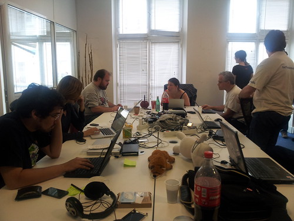

24 juin 2012
En vrac

Ça bosse dûr...[/caption] J'ai aussi assisté mercredi dernier à NantesJS un événement regroupant les utilisateurs de JavaScript dans la région de Nantes dans les locaux de la Cantine / Atlantic 2.0. Cette semaine c'était présentation d'AngularJS (framework MVC) ainsi que différentes API de cartographies. Toujours sur Nantes je vous conseille aussi 3DS in Nantes qui comme son nom l'indique (ou pas) est une soirée organisée tous les mois au bar le Pulp regroupant les joueurs de Nintendo 3DS autour de jeux comme Mario Kart. Bonne ambiance, des rencontres sympathiques et surtout des cadeaux à gagner !
Toujours sur Nantes je vous conseille aussi 3DS in Nantes qui comme son nom l'indique (ou pas) est une soirée organisée tous les mois au bar le Pulp regroupant les joueurs de Nintendo 3DS autour de jeux comme Mario Kart. Bonne ambiance, des rencontres sympathiques et surtout des cadeaux à gagner !
Je travaille toujours aussi sur Nightingale (lecteur multimédia basé sur Songbird). Un gros boulot de nettoyage des chaines de traduction est à faire et je dois aussi faire des retouches au niveau du thème actuel. Pour la prochaine version nous avons aussi corrigé quelques bugs. Pour ce qui est de Songbird, je me disais que cette année allait apporter quelque chose de neuf et en effet POTI a décidé de changer complètement leur charte visuelle ainsi que le thème de son logiciel sur PC et Android. Exit le violet, c'est maintenant un thème gris et rose qui est en fait un ancien thème officiel de Songbird remis au goût du jour (Gonzo). Cette version 2.0 pour PC n'apporte en fait rien de nouveau si ce n'est le thème et un lien vers leur application Facebook de partage suggérant fortement des liens vers 7Digital pour acheter de la musique (et ainsi apporter des sousous à l'entreprise grâce au partenariat). Ce changement radical à aussi tué l'oiseau noir, emblème mythique du logiciel dessiné par Jonathan Koshi, ancien employé de POTI. Il est maintenant remplacé par les initiales SB blanches sur fond rose qui n'est pas sans rappeler les icônes d'Adobe. Dans le passé, POTI avait déjà changé le logo en un oiseau jaune (cf mon article) mais a fait marche arrière plus tard. La version PC de Songbird se meurt et est à la traine sur différents points : pas à jour au niveau du moteur Mozilla, pas d'intégration système (par exemple : applet musique Ubuntu, prévisualisation avec boutons de lecture sur Windows 7...) et plus du tout de code neuf open source.
 Étant de plus en plus sur GitHub, je me suis fait un mini-site en utilisant le système de pages basées sur un dépôt Git. Pour le moment le site est un peu maigre en contenu et seulement en anglais. Je tâcherais de mettre un peu plus de choses bientôt :) .
Oh et récemment Flickr a mis à jour son module d'envoi de photos sur leur site, depuis le sélecteur de fichier accepte tout type de fichier et ainsi évite le bug de Gnome/GTK. De plus cette nouvelle page d'upload repose entièrement sur les technologies HTML5, merci Yahoo!
Côté musique j'avais pré-commandé en avril le nouvel album de Linkin Park «Living Things», je pense le recevoir très prochainement mais ayant déjà écouté l'ensemble des morceaux je confirme que c'est du bon son et que cet album est bien mieux que les deux derniers («A Thousand Suns» et «Minutes to Midnight»). Parmi mes pistes déjà favorites : «Castle of Glass», «Lost in the Echo» ainsi que leur premier single «Burn it Down» !
On notera que cette fois ci, Linkin Park a décidé de ne pas sortir de version collector à l'inverse des albums précédents. D'une part le making-off de l'album est maintenant visionnable sur YouTube à travers les épisodes LPTV et je pense aussi que le groupe réserve les objets collector à son fan club LPU.
Côté matériel, j'ai enfin changé de smartphone en optant pour un Samsung Galaxy SII d'occasion acheté sur le bon coin. Enfin une bonne expérience d'Android sans ralentissement et bugs ! Mon choix ne s'est pas fait au hasard car Boot2Gecko (dont j'ai déjà parlé sur mon blog) est développé et testé sur ce modèle de téléphone. Précédemment j'avais un HTC Magic, je ne sais pas encore comment je vais le recycler... peut être comme baladeur ou alors comme PirateBox ?
J'ai aussi pu commander un Raspberry Pi sur le site RS... d'après le mail de pré-commande je le recevrai en septembre, arf ça va être long ! :D (Aucune nouvelle d'Element14, site sur lequel j'ai aussi pré-commandé sans avoir été débité).
Voila, en espérant trouver le temps de bloguer plus souvent malgré le boulot, les cours et les différents projets ;)
Étant de plus en plus sur GitHub, je me suis fait un mini-site en utilisant le système de pages basées sur un dépôt Git. Pour le moment le site est un peu maigre en contenu et seulement en anglais. Je tâcherais de mettre un peu plus de choses bientôt :) .
Oh et récemment Flickr a mis à jour son module d'envoi de photos sur leur site, depuis le sélecteur de fichier accepte tout type de fichier et ainsi évite le bug de Gnome/GTK. De plus cette nouvelle page d'upload repose entièrement sur les technologies HTML5, merci Yahoo!
Côté musique j'avais pré-commandé en avril le nouvel album de Linkin Park «Living Things», je pense le recevoir très prochainement mais ayant déjà écouté l'ensemble des morceaux je confirme que c'est du bon son et que cet album est bien mieux que les deux derniers («A Thousand Suns» et «Minutes to Midnight»). Parmi mes pistes déjà favorites : «Castle of Glass», «Lost in the Echo» ainsi que leur premier single «Burn it Down» !
On notera que cette fois ci, Linkin Park a décidé de ne pas sortir de version collector à l'inverse des albums précédents. D'une part le making-off de l'album est maintenant visionnable sur YouTube à travers les épisodes LPTV et je pense aussi que le groupe réserve les objets collector à son fan club LPU.
Côté matériel, j'ai enfin changé de smartphone en optant pour un Samsung Galaxy SII d'occasion acheté sur le bon coin. Enfin une bonne expérience d'Android sans ralentissement et bugs ! Mon choix ne s'est pas fait au hasard car Boot2Gecko (dont j'ai déjà parlé sur mon blog) est développé et testé sur ce modèle de téléphone. Précédemment j'avais un HTC Magic, je ne sais pas encore comment je vais le recycler... peut être comme baladeur ou alors comme PirateBox ?
J'ai aussi pu commander un Raspberry Pi sur le site RS... d'après le mail de pré-commande je le recevrai en septembre, arf ça va être long ! :D (Aucune nouvelle d'Element14, site sur lequel j'ai aussi pré-commandé sans avoir été débité).
Voila, en espérant trouver le temps de bloguer plus souvent malgré le boulot, les cours et les différents projets ;)
Commentaires 1